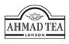
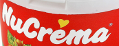
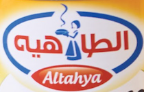
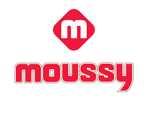

Ehab Sabry Salama
sales manager
CONTACT INFO
- 01004244452
- Ehabsabrysalama1975@gmail.com
- www.linkedin.com
-
Fifth district. Elnargs
Building no. 417 Cairo -Egypt .
EDUCATION
- 2011 : MBA ( Master Business Administration – Marketing field ) from Arab Academy For Science
- 2009 : Mini Sales Management
- 2002 : Marketing Diploma from Ein- Shames University
- 1997 : Accounting Degree from Port Said University .
LANGAUGE
- Arabic : nativ
- English : excellent
AREAS OF EXPERTISE
- Marketing & Sales
- Management Skills
- Developing Products
- Analysis Skills
- Communication Skills
- Financial Control
- Brand Strategies
- Team Leader
- Brand Building
- Negotiation Skills
PERSONAL SUMMARY
As a highly motivated , hardworking and experienced person , I had been worked in the field of FMCG – importing goods in Egypt for more than 18 years , I had a very good relationship with all supply chains , traders , importers with a very good knowledge in distribution channels for importing FMCG goods . Currently I am looking forward to work with a multinational company in FMCG as I reached the maximum position in my carrier as a Commercial Manager. I desire to join a fast growing firm that offers a constructive workplace.
INTEREST
reading
travel
profile
CAREER HISTORY
Sales Manager Raslan For Import & Distribution Co.(09l2020 up to date)
 Duties ⦁ Developing Sales Strategy. ⦁ Implement appropriate route to market (RTM) & distribution strategies in channels , ⦁ Responsible for the Retail , LG & WS channels annual sales volume & revenue . ⦁ Achieve the annual sales . ⦁ Achieve annual distribution objectives throw driving KPI’s . ⦁ Write MT annual contracts & follow up implementation the goods & payment terms. ⦁ Open new branches’ . ⦁ Hiring sales team for all channels . ⦁ Follow up branches managers performance . Business Development Manager Raslan For Import & Distribution Co. (Ahmed Tea Brand) (05/2020 up to 08/2020)) Duties ⦁ Helping organization obtain better brand recognition & financial growth. ⦁ Coordinate with Marketing & Sales to review current market trends & propose business ideas . ⦁ Improve company revenue margins. ⦁ Contact new potential clients. ⦁ Developing sales in territories that have not bought the company type of products line before . ⦁ Build long standing & successful relationships key clients. ⦁ Adapt solutions for different needs to the company. ⦁ New business deals & expands existing business opportunities. ⦁ Strong understanding for company products & needs. ⦁ Open new branches .
Egypt country ManagerPower Root Co.(02/2020 up to 07/2020) Ali Café Brand

Duties ⦁ Oversee the operations of the company affiliate in Egypt , ⦁ Oversee logistics , develop new business lines & ensure profitability, ⦁ Importing goods & recruiting staff. ⦁ Creating marketing budgets. ⦁ Deal with official documents , ⦁ Creating market territories & sections. ⦁ Reporting to head office in Malaysia .
Commercial Manager AL-Yasmin For Import & Distribution Co. (05/2018 up 02/2020)
Solen Brand
Duties ⦁ Develop commercial strategy to drive the growth of the business. ⦁ Assigned the tasks of generating marketing strategies and business plans for developing the company. ⦁ Assigned the tasks of negotiating terms and conditions with new & old vendors. ⦁ Devised pricing methodologies and industry strategies through economic and business analysis. ⦁ Planning for opening branches all over the cities in Egypt. ⦁ Controlling marketing & sales team, more than 250 employees. ⦁ Putting the turnover, sales forecast, distribution plans & marketing budget. ⦁ Identify business opportunities in marketing, sales and branding. ⦁ Review and track the monthly report on sales, competition and market share. ⦁ Responsible for PL of the company.
Commercial Manager EL-Far Trading Co. (04/2015 – 2/2018 )
Duties⦁ Develop commercial strategy to drive the growth of the business. ⦁ Assigned the tasks of generating marketing strategies and business plans for developing the company. ⦁ Assigned the tasks of negotiating terms and conditions with new & old vendors. ⦁ Devised pricing methodologies and industry strategies through economic and business analysis. ⦁ Planning for opening branches all over the cities in Egypt. ⦁ Controlling marketing & sales team, more than 60 employees. ⦁ Putting the turnover, sales forecast, distribution plans & marketing budget. ⦁ Identify business opportunities in marketing, sales and branding. ⦁ Review and track the monthly report on sales, competition and market share. ⦁ Responsible for PL of the company.
Business Development Manager EL-Shahin Co. (04/2013 – 04/2015)
Duties ⦁ Developing new market strategies to capture market channels with new clients. ⦁ Building strong relationship with sales managers, customers and industry leaders. ⦁ Vast experience with branding and introducing new products. ⦁ Brought new processes to firm for its growth by using various marketing strategies and communication skills in order to brand the firm in the market. ⦁ Utilized sales and marketing tools to create brand awareness in the market . ⦁ Introduced improvements in business strategies based on customer feedback. ⦁ Played key role in company initiatives for developing new projects for future use . ⦁ Devolving all other company departments.
Branches Manager Ayman Afandye Co. (01/2010 – 03/2013)
Duties ⦁ Direct all operational aspects including distribution operations, human resources & sales. ⦁ Assess local market conditions and identify current and prospective sales opportunities. ⦁ Develop business plan , financial objectives and forecasts . ⦁ Manage budget and allocate funds appropriately . ⦁ Provide training,coaching , development and motivation for branch manager . ⦁ Share knowledge with other branches and headquarters on effective practices . ⦁ Network to improve the presence and reputation of the company. ⦁ Meet sales target with importation plans per month. ⦁ Build up our own organization network throw cities. ⦁ Key Account Manager (Modern Trade) ⦁ AymanA fandye Co. (01/2009-01/2010) ⦁ Duties ⦁ Creating Long term strategies with the clients. ⦁ Developing productive long term relationships with clients . ⦁ Reaching sales targets throw modern trade different channels . ⦁ Develop in-store visibility plans and follow-up the implementations . ⦁ Develop annual marketing plans for every individual chain . ⦁ Preparing volume & value forecasts .
Marketing Manager Ayman Afandy Co. (03/1998-12/2008)
Duties *Prepare marketing strategies alongside other company executives and staff. *Planning marketing and branding objectives. * Prepare and adhere to budgets. *Lead marketing team that will develop execute new concepts, business models , channels to position business as innovator and leader . * Collaborate with sales to develop strategic partnership activities and implement in the market. * Take calculated risks based on data –driven analytics. * Nurture and enrich all external perceptions of the company and growth of market share. * Gather and analyze customer insight. * Measure, enhance and enrich the position and image of a company through various goals abd objectives. * Executing marketing campaigns across numerous channels. * Planning and executing new marketing initiatives. * Managing customer relationships.
 